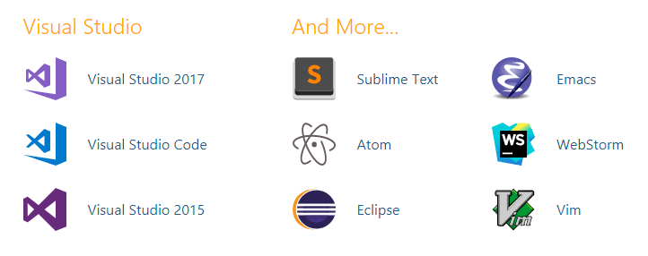

Demystifying TypeScript
5 Common Myths Debunked
by Kamran Ayub / @kamranayub
NDC Micro Edition
Fact
Writing large JavaScript applications is hard
The Mystical TypeScript
Demystified
Myth #1
“TypeScript is not interoperable with JavaScript”
AKA
“I have to rewrite my JavaScript codebase”
What language is this?
var Point = function (x, y) {
this.x = x;
this.y = y;
};
Point.prototype.distance = function (other) {
other = other || new Point(0.0, 0.0);
return Math.sqrt(
Math.pow(this.x - other.x, 2) +
Math.pow(this.y - other.y, 2));
};
var p1 = new Point(5, 6);
var p2 = new Point(1, 1);
// Calculate distance between two points
console.log("Distance between", p1, p2, "is", p1.distance(p2));
It's JavaScript!
And it's TypeScript!
All valid JavaScript is valid TypeScript
Facts
- TypeScript compiles into plain old JavaScript
- Static typing is totally optional, but encouraged
- There is no overhead because TypeScript does not run in the browser
Declaration Files
Declaration files make it easy to work with existing libraries
Myth #1
“TypeScript is not interoperable with JavaScript”
TypeScript is a typed superset of JavaScript that compiles down to plain, human-readable JavaScript
Myth #2
“I have to learn a whole new language”
AKA
“I have to re-learn JavaScript, my existing skills are useless”
Yes and No
Are there new language features to learn? Yes
Is it a whole new language? No
Perspective
- TypeScript brings future EcmaScript to you now
- You will probably learn the new syntax anyway
- There are only
a fewa handful of new things to learn - TypeScript can target different versions of EcmaScript
- TypeScript is forward-compatible
TypeScript layers on:
Interfaces, enums, namespaces, optional parameters, overload functions, abstract classes, class member accessibility/visibility, static typing, generics, union types, type guards, intersection types, type aliasing, and a ton more
Learn more:
Myth #2
“I have to learn a whole new language”
Existing experience transfers directly. Much of the syntax and features are designed to be forward-compatible with EcmaScript while maintaining maximum backwards-compatibility.
Myth #3
“You can only use TypeScript in Windows”
AKA
“My platform isn't supported!”
Facts
- The TypeScript compiler and language service is open-source
- You can use TypeScript on any platform and any OS
- You can integrate TypeScript into any editor of your choice
Cross-Platform
Cross-platform on Linux, Mac, and Windows. Full TypeScript (w/Chrome & Node.js debugging) support plus tons more.
And there's more...
Myth #3
“You can only use TypeScript in Windows”
TypeScript is open-source, has awesome cross-platform tooling, and can integrate with just about any editor you use
Myth #4
“Unit testing will eliminate any need of TypeScript”
AKA
“I don't need no stinkin' type checking”
Consider the following
“Alright, just saved my script, let's run it!”
TypeError: undefined is not a function
(╯°□°)╯︵ ┻━┻
Sound Familiar?
How about this?
“We should refactor one of the parts of this app!”
A Read-Only Codebase Is Not Good
Even if you have tests
TypeScript...
- eliminates an entire class of errors
- allows richer developer tooling (Intellisense!)
- makes your codebase leaner and easier to refactor
- is opt-in—use as much or as little as you want
- is pretty easy to learn
If you are used to strongly-typed languages,
you'll feel right at home
A practical example
Myth #4
“Unit testing will eliminate any need of TypeScript”
TypeScript is refactor-friendly, can catch easily overlooked errors, reduces risk of runtime errors, and allows you to reason about your codebase better
You should still totally write tests, though
Myth #5
“TypeScript is like CoffeeScript or Dart or Babel or Flow, etc.”
AKA
“Don't we already have this?”
MAYBE?*
CoffeeScript
class Point
constructor(@x, @y) ->
distance(other) ->
dx = @x - other.x
dy = @y - other.y
Math.sqrt dx * dx + dy * dy
- Is a separate language that compiles into JavaScript
- Inspired by Ruby & Python (ft. significant whitespace)
- Does not feature static typing
- Is more of a "macro" or expansion w/syntactic-sugar language
Dart
import 'dart:math';
class Point {
num x;
num y;
Point(this.x, this.y);
num distance(Point p) {
num dx = x - p.x;
num dy = y - p.y;
return sqrt(dx * dx + dy * dy);
}
}
- Full on SDK/framework and language
- Supports static types
- Compiles into non-idiomatic JavaScript
- Can run in a Dartium VM (extra perf)
Babel.js
- Is not a language or framework, it's a compiler
- Transpiles future EcmaScript for backwards-compatibility
- Supports extensible polyfill system
- Is not necessarily mutually exclusive from TS
You should definitely consider using it if you aren't going to use TypeScript
Flow
/* @flow */
class Point {
x: number;
y: number;
constructor(x: number, y: number) {
this.x = x;
this.y = y;
}
distance(p: Point) {
var dx = this.x - p.x;
var dy = this.y - p.y;
return Math.sqrt(dx * dx + dy * dy);
}
}
- Is eerily similar to TypeScript (checker vs. compiler)
- Is pretty much the same (besides some syntax)
- Is opt-in vs. opt-out
- Uses separate packages to compile vs. being integrated
They're pretty similar, compare.
TypeScript
class Point {
constructor(public x: number, public y: number) {
}
distance(p: Point) {
var dx = this.x - p.x;
var dy = this.y - p.y;
return Math.sqrt(dx * dx + dy * dy);
}
}
- Good middle-ground, outputs idiomatic JavaScript
- Adds static typing, friendly to Java/C-based language devs
- Forwards-compatible syntax with future EcmaScript, etc.
- Rich editor tooling & intellisense
- Simpler, "It's just JavaScript!™"
Myth #5
“TypeScript is like CoffeeScript or Dart or Babel.js or Flow”
There are huge fundamental differences between these languages/frameworks/tools (but Flow is really damn close)
Practical Use Cases
Games
I've used TypeScript for over 4 years now in my own game(s) and apps
Assists in maintaining good structure and organization of our code
github.com/excaliburjs/ludum-38
github.com/excaliburjs/ludum-35
github.com/excaliburjs/ludum-33
Libraries
Excalibur.js (the engine I work on) is written in TypeScript
Angular is written in TypeScript
Provides type-safe API and type-rich documentation
Provides structure and organization to your framework
Great for OSS projects where others can contribute
Large Applications
Visual Studio Code is written in TypeScript
The Microsoft Azure Blade UI (portal) is written in TypeScript
Angular (and React) apps are using TypeScript
Great fit for "enterprisey" apps and projects with rotating team members
Do you truly enjoy the loosey-goosey nature of Javascript all the time?
It wasn't designed for scale. TypeScript is.
Go and get things done.
Thank you
@kamranayub / kamranicus.com
See me at
Azure and Node.js Bot Workshop
MinneWebCon, Tuesday, April 24
Maintainable & Scalable Apps Using TypeScript and React
NDC MN, Thursday, May 10
For your perusal
Learn TypeScript with my 8 hour course (bit.ly/introts) from Packt
Credits: Title border designed by Freepik